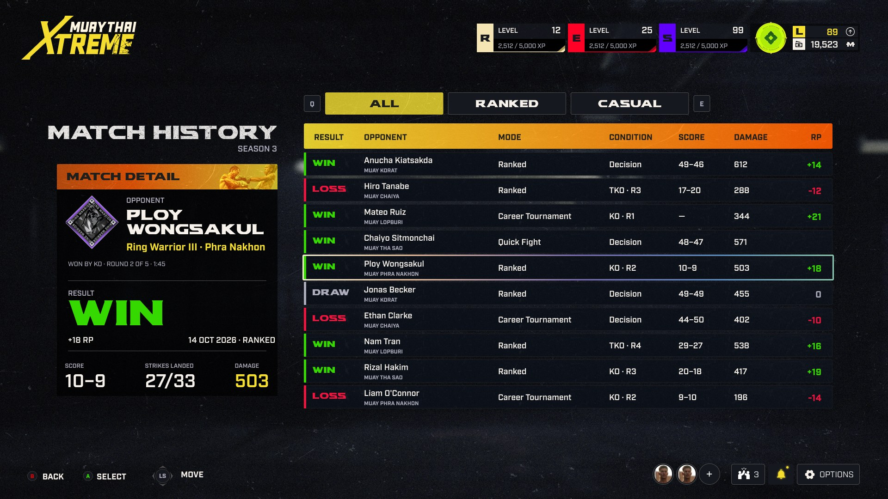

Diamond Sweep
Grid flow: lines stroke in → theme cells → black cells → lines fade, the center clears for the logo → dissolve out. Profile → Match History.


Origin · numpad 1-9
Mode
Cell animation
Cell shape
Colours · game theme
Classic with Square shape and 45° rotation is the original UI/DiamondSweep frag line for line (Direction 5-8 = corners, new). Grid flow reuses its grid and cell order, and adds the line, colour, black and logo stages. Cell shape sets the whole grid: Square, Diamond, Hexagon and Triangle tile; Circle and Rounded sit on the square grid.